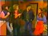

~ ~ Wants ~ ~
~ ~ Info ~ ~
Classic Bo & Hope Edits
Edits of Bo and Hope (as portrayed by Peter Reckell and Kristian Alfonso).
The picture quality of the edits varies a lot due to the age and rarity of the footage. Please see the individual DVDs for more info on quality and example screencaps. The edits were recorded to DVD in the highest quality mode (each DVD runs for one hour) so as not to lose any quality when transferred from tape.
The edits are all in NTSC mode (playable worldwide). However, for the first 12 edits, the source video was in a mix of both pal and NTSC so I have also created these DVD edits in pal.
I didn't make most of the edits myself, and although they are mostly complete, I've noticed there are a few scenes missing (I think all Bo/Hope interactions are complete). Since I haven't watched the full episodes I can't give any more information about exactly what is missing, however, I would be happy to check on any specific scenes you are interested in.
There are 16 edits so far as shown in the list below (many more to come!). I will be updating this page with descriptions and screencaps for these DVDs over the next few weeks.
Available Edits - Jump to:
Bo and Hope DVD #1
Bo arrives back in Salem, in trouble with the police after taking his father's car for a joyride. Bo and Hope talk at Shenanigans (not recognizing each other) and he offers her a ride on his motorcycle. The next day, they find out each other's identity.
Hope babysits for Carrie. Bo is there too because Marlena wants the place wallpapered and they share some insults. Hope tries to check the walls for nails, but falls down into Bo's arms...
Hope tells Bo she thinks Roman is a hero.
Bo asks Hope what kind of guy turns her on and asks if she thinks he is sexy!
Bo gets a job as tennis instructor, working for free in exchange for room and board. Bo overhears Hope and Julie arguing. Bo and Hope chat at the docks and he wants to know why she's always hanging around him?
Screencaps - click on images to enlarge
Quality varies - There are a couple of scenes that are black and white but the quality is mainly as shown in the last 3 screencaps.

{kind=link}
{kind=link}
{kind=link}
{kind=link}
{kind=link}
{kind=link}